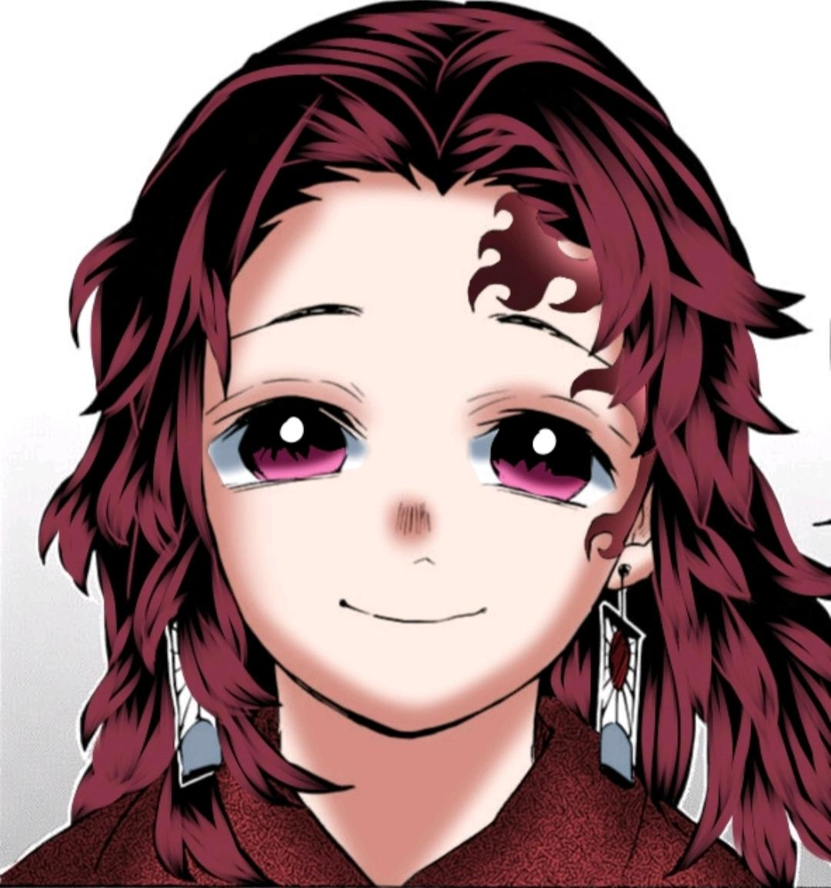Yoriichi and his twin brother, Michikatsu, were born into the Tsugikuni clan within the middle of the Sengoku period, a time when twins were considered to be an extremely bad omen. Yoriichi in particular was born with an odd birthmark on his forehead, which caused his father to declare that he would kill him; however, their mother Akeno flew into a rage and stopped him. It was eventually agreed upon that Yoriichi would be sent to a temple to become a monk when he turned ten years old.[1] Despite their father's belief that the mark was unlucky, it actually granted Yoriichi incredible physical prowess and the ability to see the bodies of living things in transparency. Yoriichi grew up very differently from Michikatsu, being given much poorer food and education than his brother and confined to a small three-tatami room away from the rest of the house. He never spoke and was thought to be deaf as a result. Akeno subsequently made him Hanafuda charm earrings in the hopes the gods would bless him with the ability to speak. He also was frequently seen clutching his mother's side; because of this, Michikatsu found him pitiful. Still, his brother often snuck behind their father's back to see Yoriichi, even giving him a handmade flute as a gift to comfort him.
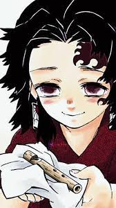 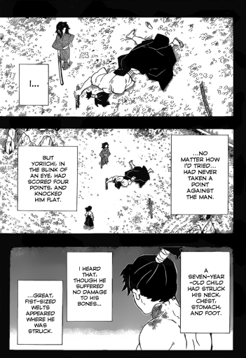One day, when he was seven, Yoriichi smiled and spoke for the first time, declaring his intent to become a samurai like his brother after watching Michikatsu practice sword swings, startling him. However, Michikatsu was dismissive of this sentiment as it was well-known that Yoriichi would be sent to the temple when he was ten. Still, one of their father's men tasked with training Michikatsu decided to humor Yoriichi, showing him a simple stance. Unexpectedly, the young boy flew into action after assuming the stance, landing four blows against the man and shocking his brother, who despite his training had never landed one. However, Yoriichi couldn't stand the feeling of hitting someone and renounced his goal to become a samurai. Michikatsu often asked him about how he managed to hit the man and he described what was likely an early form of a Breathing Style. Rather than talk about the sword and continue training, he happily told Michikatsu he would rather play ban-sugoroku board games and fly kites with him instead.
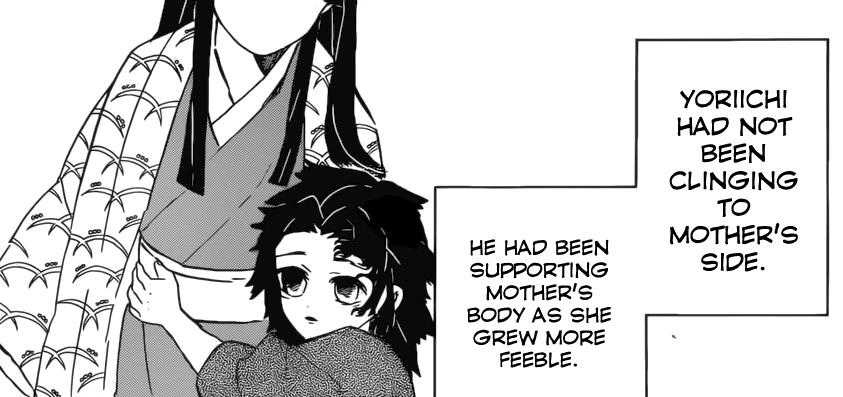When their mother passed away from her illness, Yoriichi went to Michikatsu's room at night to tell his brother the news and bid farewell, planning to leave for the temple that night. He expressed gratitude towards his brother, stating that he would always keep him in mind and fondly tucked away the flute Michikatsu had made for him earlier. It was later revealed to Michikatsu through their mother's diary that Yoriichi had known everything about their mother's illness, how it weakened her left side and Yoriichi's frequent attempts to support her and help her move around. It was also revealed that Yoriichi knew his father would make him his heir and send Michikatsu to the temple, ran away to spare his brother. Despite this kind act, Michikatsu developed an intense hatred and envy of Yoriichi for continuing to surpass him in everything and continually showing gratitude to gain seemingly nothing.
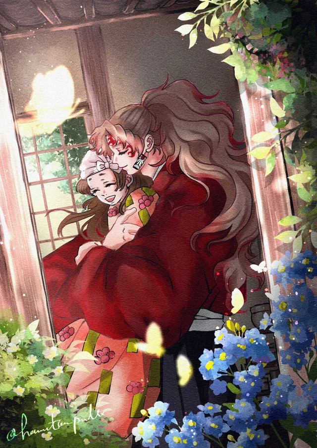Yoriichi ran away from the house and didn't stop. After running straight for one day and one night without any sign of exhaustion into the mountains, Yoriichi met a girl around the same age as him named Uta, whose entire family had died. Yoriichi chose to live with her and after 10 years, Uta and Yoriichi had married: the former becoming pregnant later. Just before the expected arrival, Yoriichi left home to summon a midwife, promising his wife to be back before the sun set. On his way, Yoriichi had helped an old man and lost so much time that he decided to return home and summon a midwife the next day. By then the sun had already set: when he finally arrived home he found that Uta and the unborn child were killed by a demon. The tragedy shocked Yoriichi so much that he held her corpse in his arms for ten days straight and only buried them after a pursuing Demon Slayer encouraged him to do so. This led Yoriichi to pick up his blade again and train as a Demon Slayer.
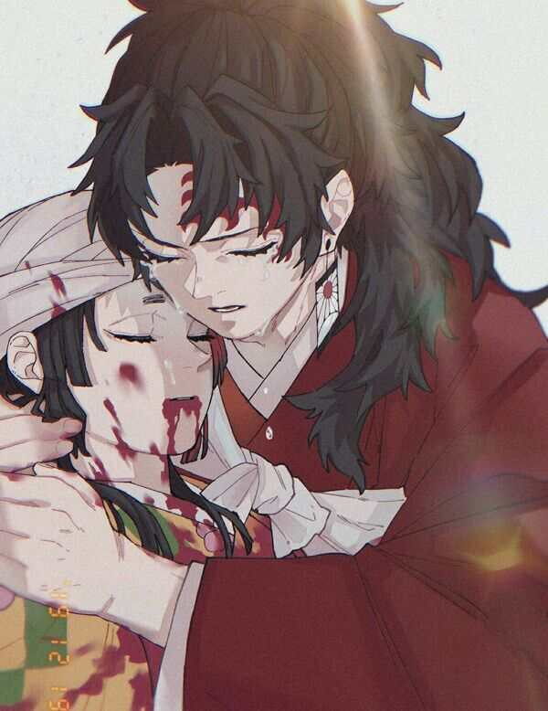Aided by his Demon Slayer Mark and innate talent for swordsmanship, Yoriichi proved to be an incredibly powerful Demon Slayer. He reunites with Michikatsu after the latter's samurai encampment was slaughtered by a demon and he was left the sole survivor; Yoriichi killed the creature effortlessly and apologized for the deaths of his brother's comrades. Aided by his breathing technique, later named Sun Breathing, and wanting to help others, Yoriichi tried to teach it to the other Demon Slayers. However, no one could match his form exactly. Undaunted, he modified the breathing techniques to suit their strengths, allowing them to gain a similar increase in power and abilities to help them hunt demons. The variations he created formed the first Water, Wind, Flame, Stone and Thunder Breathing techniques and the best of these Demon Slayers became known as the Hashira. Michikatsu himself tried and failed to learn Sun Breathing, instead creating his own style he named Moon Breathing.
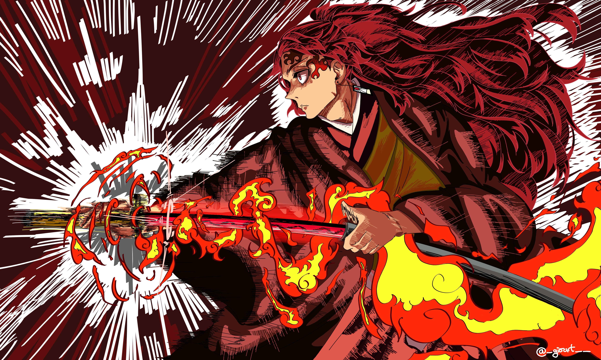Soon, Yoriichi encounters Muzan Kibutsuji, the progenitor demon and mortal enemy of the Demon Slayers, accompanied by Tamayo. Upon meeting him, Yoriichi felt his rampant malicious intent, likening it boiling magma from a volcano ready to consume everything. It was then he reasoned he was born with the skills and talent to defeat Muzan once and for all. Muzan stated that he had lost interest in swordsmen who employ breathing techniques and performed long sweeps of his arms to outright kill Yoriichi. He dodged them, but instantly realized any of those attacks would be fatal and felt fear for the first time. Seeing into the Transparent World, Yoriichi discerned Muzan had seven hearts and five brains that change position within his body. Seeing his chance, he combined all his forms into a single attack, cutting through them all and overpowering Muzan completely.
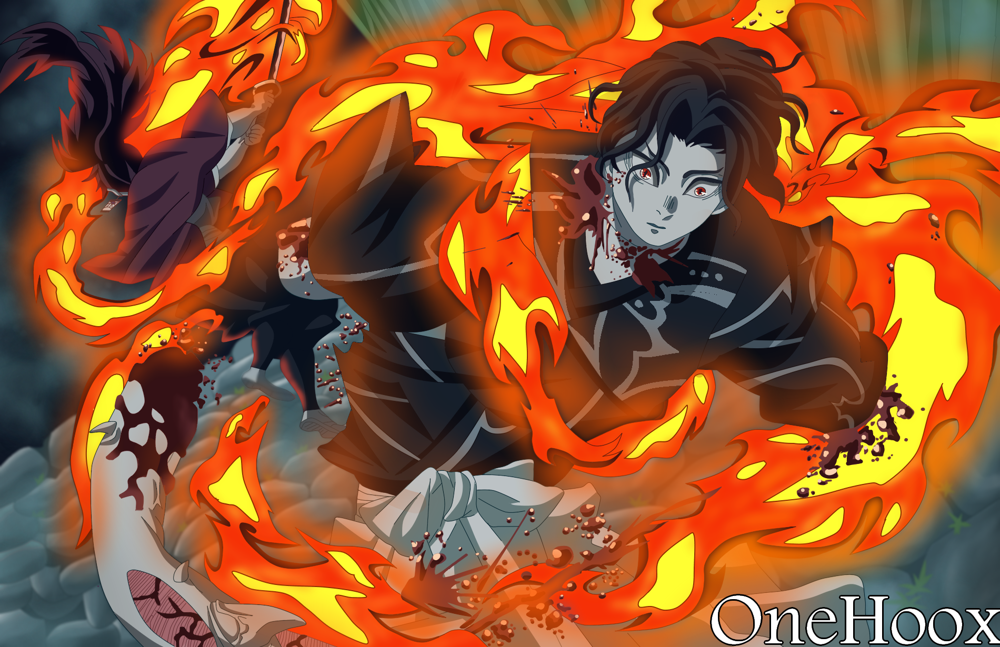Muzan was left in disbelief at his inability to regenerate while struggling to keep his head attached. Yoriichi asked him what he felt was the value of life but didn't receive an answer. He turned to Tamayo, but was surprised to see her looking at her master's dismembered body with a hopeful gleam in her eyes. Moving to kill him once and for all, Yoriichi instead heard the sound of teeth cracking as Muzan's body burst into hundreds of small pieces. Caught off-guard, he was only able to destroy 1,500 of the 1,800 pieces, leaving the rest to escape for Muzan to regenerate again. In spite of Yoriichi's failure to kill him, Muzan never forgot the encounter and remained fearful of Yoriichi for the rest of his life.
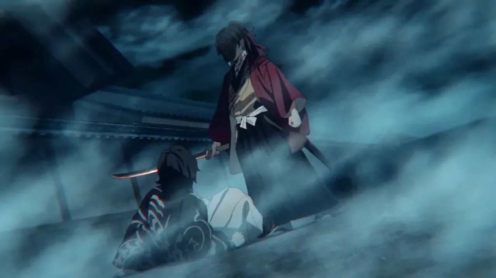Tamayo was left on the verge of tears as she realized Muzan learned how to avoid death by decapitation, cursing the survival of the man that ruined her life. Upon realizing the Kibutsuji curse failed due to Muzan being weakened so much, Tamayo was surprised. Yoriichi approached her, but he didn't immediately attack. Tamayo decided to tell him everything he needed to know about Muzan and it was unlikely he would ever meet him again. As thanks for her aid, he let her go free, telling her he had faith in her will to end Muzan. Soon after this, several Demon Slayers came to report to Yoriichi that his brother had betrayed the organization, becoming a demon and assassinating the Oyakata. Yoriichi took responsibility for Michikatsu's betrayal, his inability to kill Muzan, and letting Tamayo escape. The other Demon Slayers demanded he kill himself as penance, but the newly appointed Oyakata ordered he be spared and allowed him to leave in banishment.
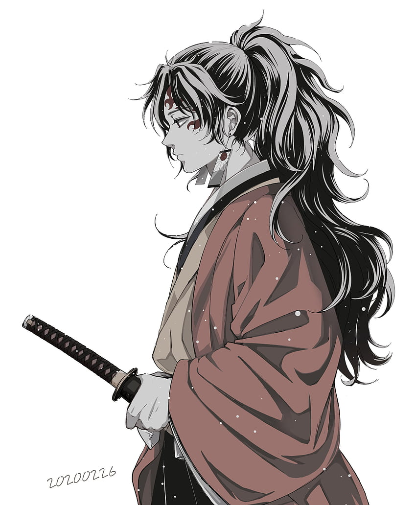After his banishment, Yoriichi decided he had much on his mind and wanted someone to talk to. He could only picture his friends Sumiyoshi and Suyako and decided to visit them. He meets Sumiyoshi, sat down with him, and told him his entire story, from his beginning to his banishment from the Demon Slayers. Reminded of his tragedies and speaking of his regret at letting Muzan live and the countless death that would follow, Yoriichi grew despondent. Sumire arrives at that moment to ask for a hug. At Sumiyoshi's request, he lifts her up, making her laugh and squeal with joy, causing him to break down in tears and embrace her. Suyako arrives shortly after to comfort him and treat Yoriichi to a meal and cheer him up.
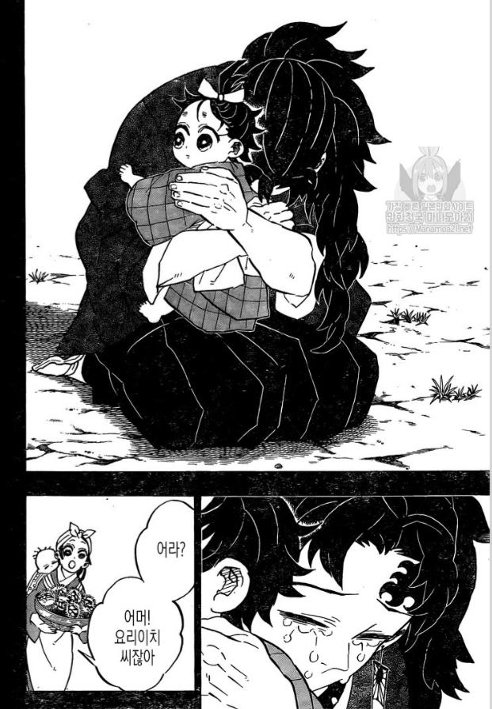While with the Kamados, Yoriichi would be asked by Suyako to perform the Sun Breathing's forms. He kindly did so, performing all the moves with such grace, he was likened more as a spirit that a human. Sumiyoshi would watch these demonstration intently and keep them in his memories. On his last visit, despite being told he was welcome at any time, Yoriichi gave Sumiyoshi his Hanafuda earrings. Sumiyoshi and Suyako realized then this was going to be the last time he would visit. Overcome with emotion, Sumiyoshi called out to Yoriichi as he walked away, telling him to stop saying that he was a man of no worth. He reminded him that he saved them and promised to preserve the Sun Breathing's forms through his descendants. Hearing this, Yoriichi turns and smiles brightly, thanking the Kamados and waving them farewell. Despite being banished from the Corps, Yoriichi would continue hunting demons independently, but he kept in touch with the Hashira he befriended with silent permission from the Oyakata. Meanwhile, the Corps itself fell into disarray: Muzan killed every other Sun Breather and no one could teach Breathing Styles as well as Yoriichi.
 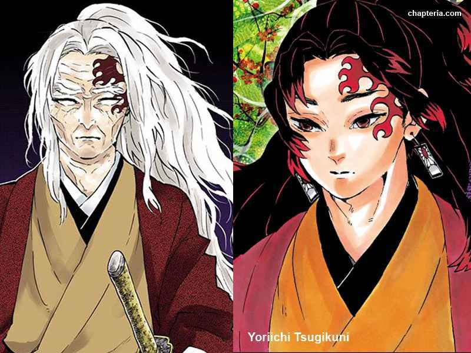
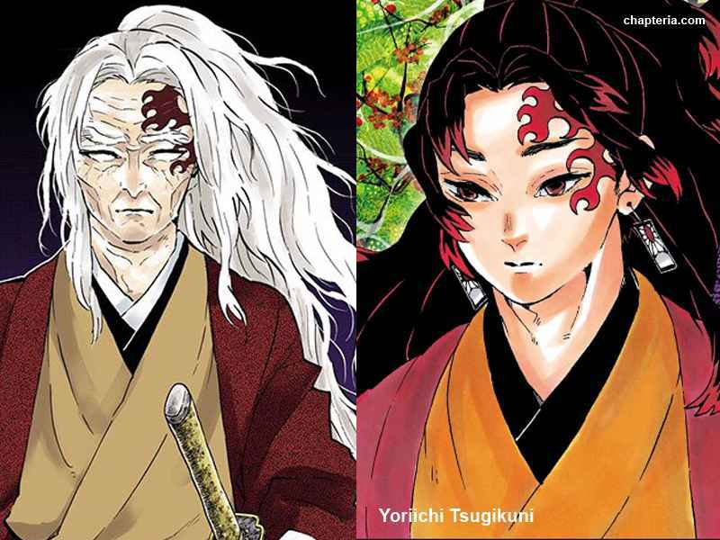
Despite the apparently limited lifespan of 25 years suffered by those who bore the Demon Slayer Mark, Yoriichi lived to his 80's but eventually went blind. On the last day of his life, he would personally confront Michikatsu, now known as Kokushibo and Muzan's strongest lieutenant as Upper Rank One. Devastated at what his brother had become, he cried, and Kokushibo could only show disgust that his younger brother was old but still alive despite having the mark. In spite of his love for him, Yoriichi knew he had to kill him and prepared to strike.
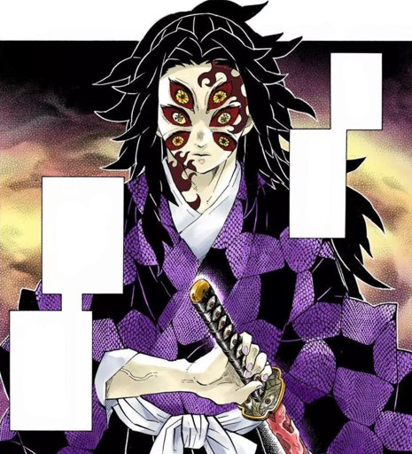 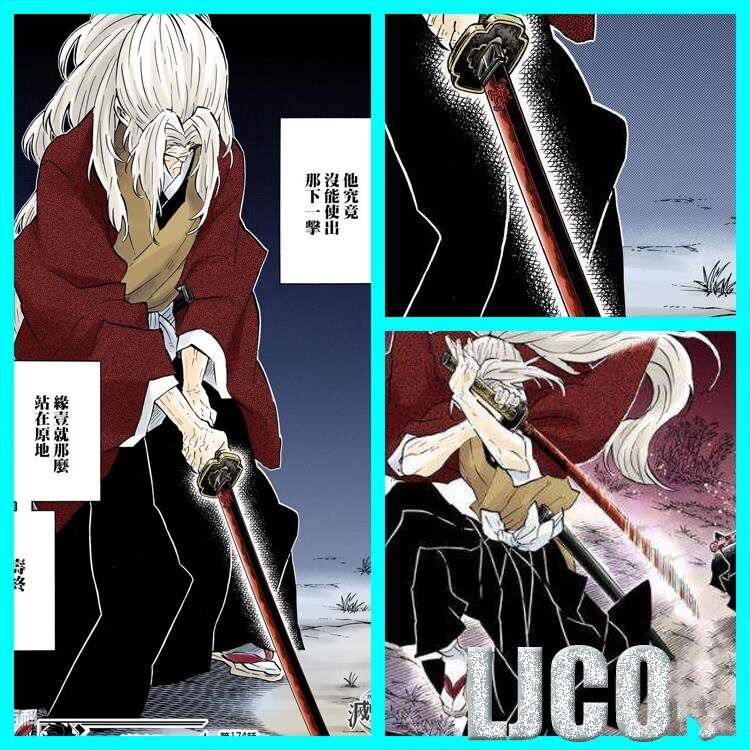Kokushibo's disgust turned to fear upon seeing that Yoriichi still was the same capable and powerful warrior from before. He told his brother when he was to attack and soon struck, slicing through his neck without Kokushibo able to even draw his blade. Angered at being surpassed again, Kokushibo waited for the next attack. Unfortunately, it never came; Yoriichi passes from old age untouched. Angered that his one chance at a fair battle is gone and the man who nearly killed Muzan and him is now dead and undefeated forever, Kokushibo would strike at his brother's corpse in scorn, only to realize Yoriichi carried the flute he gifted to him when they were both still children. Unable to sever his connection with Yoriichi, Kokushibo took the split flute and carried it with him.
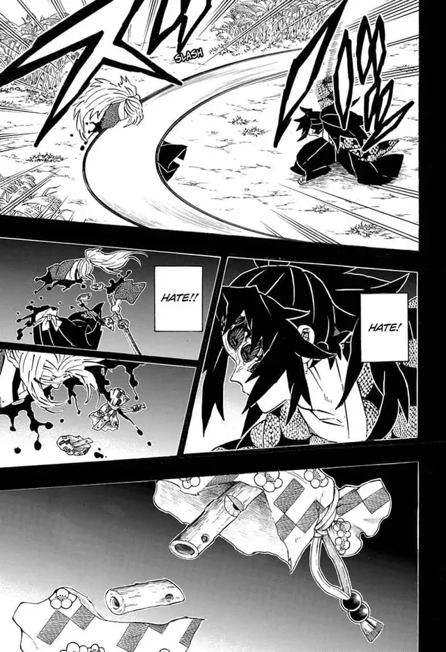 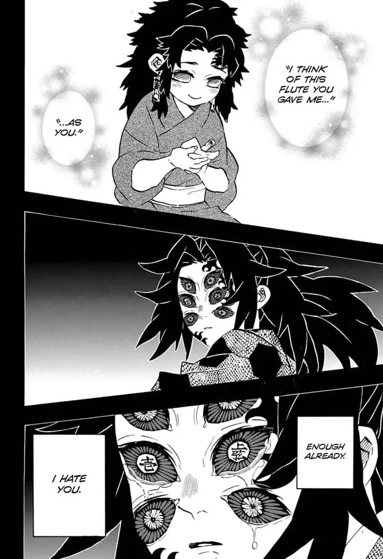